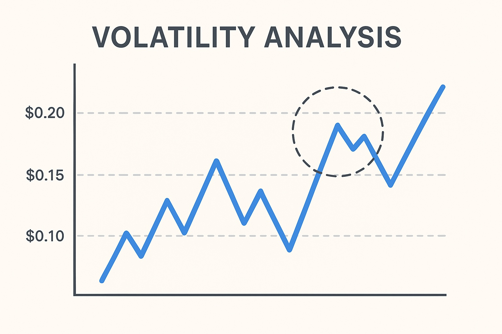

Harmony Price Outlook for End of 2025: Detailed Analysis and Insights
The information in this article is intended for educational purposes only and should not be considered financial advice. Investing in cryptocurrencies involves significant risks.
Introduction
As of August 20, 2025, 01:19 AM EEST, Harmony (ONE) trades at about $0.011. It positions itself as a layer-1 blockchain designed for scalability and low-cost decentralized applications (dApps). With its Effective Proof-of-Stake (EPoS) mechanism and sharding technology, Harmony delivers high throughput and low latency. Despite setbacks from the 2022 Horizon bridge exploit, development continues with emphasis on DeFi and NFT integrations. This article reviews Harmony’s potential price trajectory by the end of 2025, considering bullish and bearish scenarios, growth factors, and risks tied to market dynamics and ecosystem progress.

Current Situation
As of August 20, 2025, Harmony is valued at around $0.011, showing a 7.1% daily drop but a 23.93% gain compared to last week’s $0.0089. Over the past month, ONE marked 15 green days (50%) with a volatility of 7.76%, indicating moderate fluctuations. The Fear and Greed Index at 64 (Greed) reflects cautious optimism among investors, supported by recent ecosystem updates and community engagement. On a yearly scale, ONE is up 6.41%, though it still lags far behind its all-time high of $0.379 from October 2021, heavily impacted by the $100 million Horizon bridge hack in June 2022. Its circulating supply stands at 14.64 billion ONE, giving it a market cap of $224.88 million and ranking #263 overall.
Price Predictions for End of 2025
Forecasts for Harmony (ONE) in December 2025 remain mixed, reflecting its volatile history and ongoing recovery. Here are the main scenarios:
- Bearish Scenario: Analysts foresee a decline to $0.00385–$0.008419 if a 30–40% market correction materializes in early 2025 or if ecosystem recovery slows, as projected by WalletInvestor and TradingBeast.
- Moderate Scenario: Estimates place ONE between $0.011 and $0.01957192, backed by consistent upgrades and community-led initiatives, according to CoinCodex and Traders Union.
- Bullish Scenario: Optimistic views suggest ONE could climb to $0.03969603–$0.0479952, fueled by successful DeFi/NFT integrations, token burns, and a possible market rally between February and April 2025, as noted by Changelly and Coinpedia.
Speculative forecasts placing ONE at $0.1 or above are unlikely, given the large circulating supply of 14.64 billion tokens, which would require an unrealistic market capitalization increase. Reaching $1 by 2025 is widely considered implausible.
Factors Supporting Growth
- EPoS and Sharding: Harmony’s Effective Proof-of-Stake and sharding architecture offer scalability with low fees, appealing to developers and users alike.
- Ecosystem Development: Integrations like AI agents and cross-chain protocols aim to strengthen dApp usability and adoption.
- Community Engagement: A global community, including initiatives such as Pangaea validators across 100+ countries, drives governance and project growth.
- Market Rally: A projected crypto rally in early 2025, particularly between February and April, could serve as a price catalyst for ONE.
- DeFi and NFT Expansion: Harmony’s efforts in DeFi and NFT bridging could spur token demand if adoption broadens.
Risks and Challenges
- Market Volatility: A potential 30–40% market correction in early 2025 could put heavy pressure on ONE, mirroring past declines.
- Past Incidents: The 2022 Horizon bridge hack, which cost $100 million, still weighs on investor confidence.
- Regulatory Environment: Tighter crypto regulations worldwide may hinder Harmony’s growth and accessibility.
- Competition: Rival layer-1 platforms like Ethereum, Solana, and Cardano pose strong competition to Harmony’s adoption.
- Large Supply: With 14.64 billion tokens circulating, significant price appreciation is difficult without large-scale token burns.
Volatility Analysis
Between July and August 2025, Harmony rose from $0.009 to $0.011, a 22% increase with volatility of 7.76%, reflecting moderate market swings. Technical indicators show mixed outcomes: RSI at 45.33 signals neutrality, while the 50-day SMA ($0.0107) and 200-day SMA ($0.0131) highlight bearish sentiment. A potential recovery in early 2025 could support upward momentum if DeFi/NFT integrations and upgrades succeed. Still, Harmony’s high supply and legacy challenges restrict major upside without substantial breakthroughs.
Conclusion
By late 2025, Harmony’s price is expected to trade between $0.011 and $0.0479952, with a slim chance of reaching $0.1 under highly bullish conditions supported by upgrades, ecosystem growth, and a market rally. However, reaching $1 remains unrealistic due to the large token supply and past trust issues. Investors should weigh market volatility, regulations, and competition carefully, and conduct thorough research before considering an investment in Harmony.